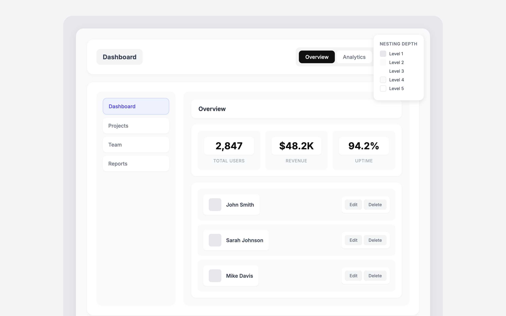
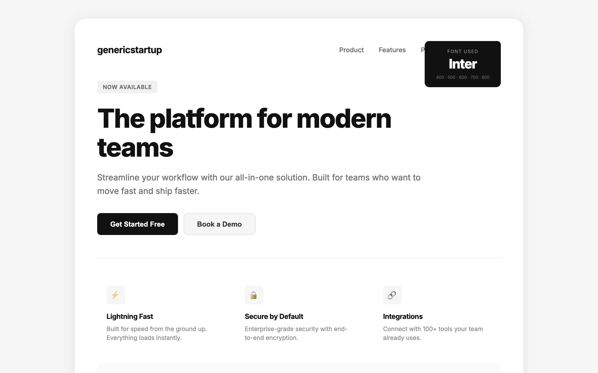
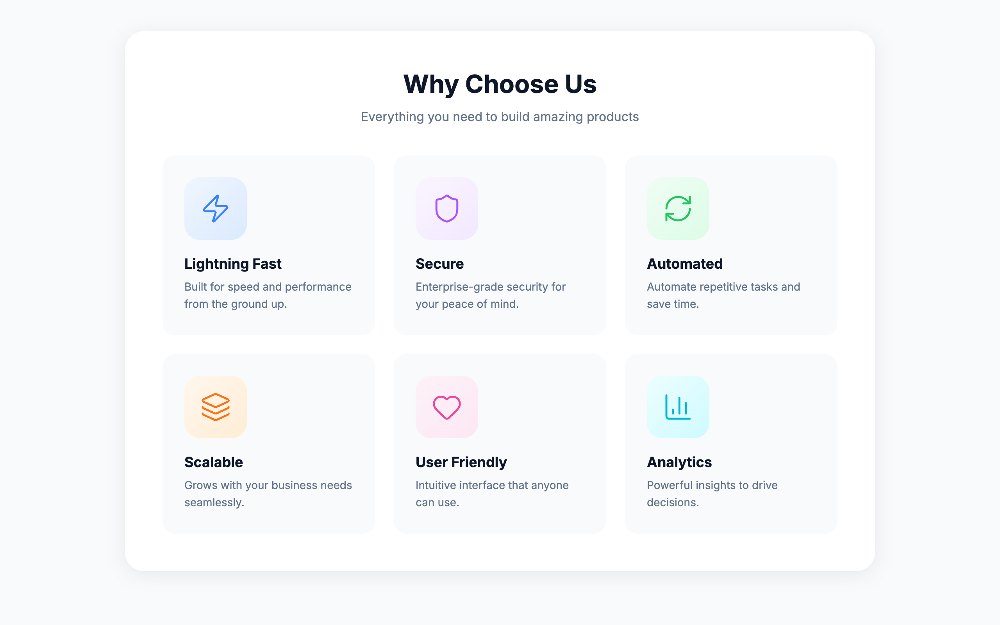
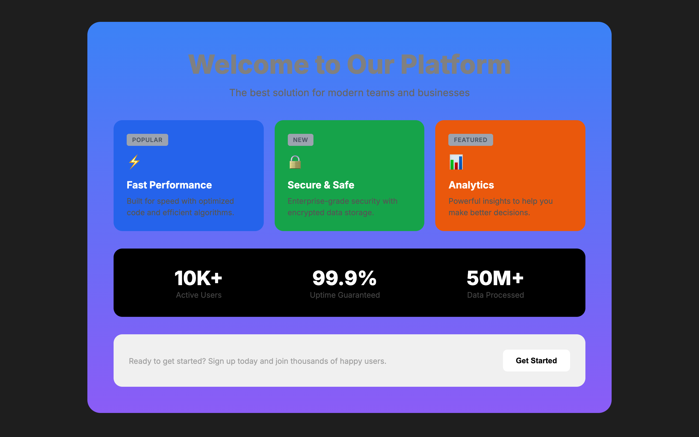
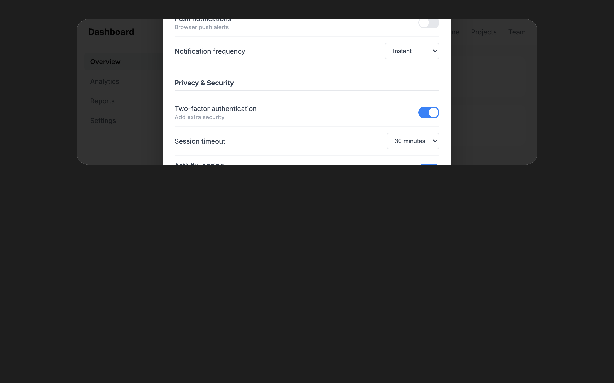

QualityBrowser
Body text touching the page edge
Paragraphs need space at the sides of the screen. Add horizontal padding to the content container, and check that it remains at narrow widths.
Layout guideAI slop changes with the era and the model. The design checker keeps up, so you don’t have to spot every new tell yourself.
Trends change, and models have their own defaults. Compare purple gradients, beige editorial layouts, and a GPT-style neobrutalist take on the same fictional product. The design checker’s guidance and checks evolve with both.
Purple gradients, glass panels, neon glow
These examples exaggerate habits from different eras and models. Switch tabs to see what the design checker catches in each. Hover or tap an outlined element to read the finding. Page-wide findings appear in the top bar.
Open an example to inspect the page with the detector overlay. Each one deliberately exaggerates a design habit.
Purple-to-blue gradients compete across buttons, text, and backgrounds.
Glass panels, neon edges, and glowing orbs pile up without helping you use the page.
Buttons bounce, icons wiggle, and badges float. Everything asks for attention at once.
A colored stripe decorates every rounded card, without marking anything useful.

Five layers of cards add padding and shadows around the same content. Each layer leaves less room for the task.
The same hero, metrics, and feature grid repeat with different colors. The layout barely responds to the content.

Inter everywhere, paired with an interchangeable product pitch. Typography should help give this product a voice.

Oversized icon tiles make decoration more prominent than the feature it introduces.

Low-contrast text gets lost against its background, especially in small labels.
Four bits of text explain the same field. Repetition adds reading without helping you decide what to enter.

Three columns of settings crowd into a scrolling dialog. A dedicated page would give the task room.
Patterns to recognize, with examples and ways to improve them. AI slop covers familiar AI design habits. Quality covers problems that make an interface harder to use. Your design system checks choices against your project’s own standards.
The catalog includes 61 detector rules and 6 patterns for design review. A finding is a reason to look closer: consider the page, the task, and any intentional design choices.
With DESIGN.md in your project, the design checker checks for fonts, colors, type sizes, and corner radii that fall outside your documented system. Set up design-system checks.
4 rules
This font is not in your documented type system. Use an approved font, or update DESIGN.md if the addition is intentional.
Design-system checksThis color falls outside your documented palette. Use a palette color, or add the new color to your design system.
Design-system checksThis corner radius is not in your documented scale. Use an existing radius, or update the system to include the new shape.
Design-system checksThis font size is not in your documented type scale. Use an existing size, or add a new step to the system.
Design-system checks8 rules
A decorative grid adds lines without helping people use the page. Keep grids for canvases, maps, or tasks that need measurement.
Layout guideA thick colored border makes a rounded card’s outline compete with its content. Try a lighter border, or let the background define the card.
Polish guideBlur effects, glass cards, and glow borders used as decoration rather than to solve a real layering problem.
Critique guideA thick colored stripe turns an ordinary card into something that looks like an alert. Remove it when there is no status or warning to communicate.
Polish guideA thin border and a broad shadow both define the same card. Choose the edge or the shadow to give the surface a clearer shape.
Polish guideRepeating stripes fill empty space with visual noise. Use a plain surface, or a texture that belongs to the design.
Polish guideLarge corner radii can squeeze the content and make every card look alike. Reduce the curve to suit the card’s size and give its contents room.
Critique guideA hastily drawn mascot or scene can make a finished page feel unfinished. Use a well-made illustration or photo, or leave it out.
Critique guide11 rules
A small label above a heading adds another line to read. Remove it if it repeats the heading, or work the useful words into the heading itself.
Typeset guideNavigation, links, and controls are hard to use when their text is too small. Increase the size so people can read them without zooming.
Typeset guideHeadings and body text look too similar, making the page hard to scan. Give them clearer differences in size, weight, or spacing.
Typeset guideAn icon in a rounded square above a heading is a familiar AI feature-card pattern. Try placing the icon beside the heading, or remove its container.
Typeset guideAn oversized italic serif headline is a familiar shortcut to an editorial look. Choose a type style that fits the product’s character, rather than borrowing the same one by default.
Typeset guideA small pill above the headline can look clickable and compete with the message. Remove it if it adds little, or put useful information in the headline or supporting text.
Typeset guideA long headline at display size can fill the first screen by itself. Shorten it or reduce the size so the page has room to explain the offer and show what to do next.
Typeset guideLetters pushed too close together become hard to distinguish. Loosen the spacing until each character is clear, especially at smaller screen sizes.
Typeset guideFamiliar defaults such as Inter and Geist can make unrelated products look alike. Choose typography for the product’s character and reading needs, and keep established brand fonts when they fit.
Typeset guideOne font family can work well across a whole page. If everything feels flat, vary size, weight, and spacing before deciding whether a second family would help.
Typeset guideLong passages in capitals are tiring to read. Use sentence case for body text, and keep uppercase for short labels or headings.
Typeset guide7 rules
A bright halo on a dark page is a familiar AI background effect. Remove the glow when it competes with the content or has no role in the design.
Colorize guideA faint glow behind a section adds emphasis without explaining what matters. Use spacing, contrast, or a clear heading to guide attention.
Colorize guidePurple gradients and bright cyan on dark backgrounds are familiar AI defaults. Build the palette around the product’s identity and how people will use it.
Colorize guideGlowing borders and accents can turn a dark interface into a wall of neon. Keep the dark theme if it suits the product, and reduce the glow so useful information stands out.
Colorize guideA gradient makes color change across a heading or number, often just for decoration. Try one solid color and use size or weight for emphasis.
Colorize guideNeutral gray text can look washed out on a colored surface. Try a darker tint or a light text color, then check the contrast against the actual background.
Colorize guideCream and beige can become a default substitute for a considered palette. Keep them when they belong to the product, and choose the rest of the colors with equal care.
Colorize guide12 rules
Tiny numbers beside headings add clutter when there is no sequence to follow. Keep numbering for steps or an order that matters.
Layout guideCards meet the scroller’s edge without room around them. Add matching space at both ends so the first and last cards have a clear boundary.
Layout guideAn opaque layer covers readable text. Move the layer or give the text clear space.
Harden guideOne opening column extends far below the other, leaving a large gap. Rebalance the content, or move the longer section below both columns.
Layout guideA heading sits closer to the previous block than its own content. Give it more space above than below.
Layout guideA huge number with a small label and supporting stats is a familiar landing-page template. Lead with a metric when it helps explain the product, and give it enough context to mean something.
Critique guideRepeated icon, heading, and text cards give every point the same weight. Group related ideas and vary the layout when the content needs different treatment.
Layout guideEqual gaps everywhere make it hard to tell what belongs together. Keep related items close and leave more space between separate groups.
Layout guideCards inside cards create visual noise and excessive depth. Flatten the hierarchy: use spacing, typography, and dividers instead of nesting containers.
Layout guideLong lines make it harder to find the start of the next line. Try a text width of 65–75 characters, then adjust for the font, content, and screen.
Typeset guideContent spills outside its container or makes the page scroll sideways. Let text wrap and elements shrink; use a scrolling region when the content needs one.
Harden guideA container cuts off a menu, tooltip, or popover that needs to extend beyond it. Allow the overflow, or render that layer outside the clipping container.
Harden guide6 rules
A pulsing status dot draws attention even when nothing changes. Keep static status still, and use motion to signal activity that matters.
Animate guideA blinking cursor makes ordinary text look editable or like a terminal. Remove it from static copy; keep it where people can type.
Animate guideAuto-scrolling text or logos make people read at the page’s pace. Keep them still, or give people controls to pause and browse.
Animate guideA dialog that bounces or overshoots can make a routine action feel fussy. Let it settle quickly, and save playful motion for moments that suit the product.
Animate guideAnimating size or spacing can shift nearby content and make transitions stutter. Use transforms for visual movement where possible, and check performance when the layout needs to change.
Optimize guideZooming or rotating every image on hover adds movement without a clear purpose. Keep images still unless the motion helps explain what people can do.
Animate guide5 rules
The same label appears in several slots of one card. Keep it once, where it matters.
Clarify guideA dash in every sentence is a familiar AI writing habit. Use a full stop between separate thoughts, and choose other punctuation when it makes the sentence easier to follow.
Clarify guideWords like “supercharge” and “world-class” promise a lot without explaining the product. Say what people can do and what improves for them.
Clarify guideRepeated lines like “Not a feature. A platform.” make every point sound like a slogan. Explain the distinction when it matters, and state the useful information directly.
Clarify guideCalling something “theater” can replace an explanation with a dismissal. Name what is ineffective or misleading, and explain why.
Clarify guide4 rules
A scene built from generic circles and blocks can look like placeholder art. Choose imagery that says something specific about the product.
Critique guideA jagged image mask tries to imitate a torn or organic edge. Use a prepared cut-out asset for that effect, or choose a clean crop.
Polish guideA nearly opaque overlay hides the image you added. Reduce it until the image contributes, or remove an image that serves no purpose.
Polish guideAn image with a missing, empty, or placeholder source leaves the page unfinished. Add the intended asset and check that it loads, or remove the image.
Harden guide10 rules
An uncaught JavaScript error can break controls or hide content. Fix the error, then check that the page works before polishing its appearance.
Harden guideText pressed against a button or card edge feels cramped. Add enough padding to separate the content from its container, using your spacing scale.
Layout guideParagraphs need space at the sides of the screen. Add horizontal padding to the content container, and check that it remains at narrow widths.
Layout guideJustified paragraphs can leave distracting gaps between words. Align body text to the start of the line, or use hyphenation and check the spacing at each screen size.
Typeset guideText that blends into its background is hard to read. Increase contrast to meet WCAG AA: at least 4.5:1 for regular text and 3:1 for large text.
Audit guideHeading levels help screen reader users navigate. Match them to the page structure: use h2 for a section under h1, then h3 for a subsection.
Audit guideClosely packed lines make paragraphs hard to follow. Start around 1.5 times the font size, then adjust for the typeface and line length.
Typeset guideSmall body text makes reading a chore. Start around 16px, then check the actual typeface on a phone and desktop. Keep secondary text comfortably readable too.
Typeset guideSpreading letters far apart makes paragraphs harder to read. Keep body text near the font’s default spacing; save wider spacing for short labels.
Typeset guideScan source files or a running page. Use the results locally or in CI, without starting an AI conversation.
npx design-checker detect src/
npx design-checker detect http://localhost:3000Use critique to understand what is holding the design back and what to improve first. It combines design judgment with automated checks and shows findings on the page when your agent’s browser tools support the overlay.
Open your design-checker extension and choose Scan page. Use Show overlays to see where the findings appear on the page.